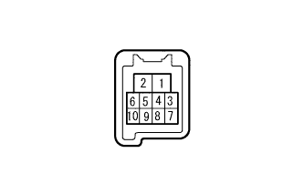
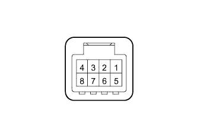

Power Window System Terminals of ECU |
 |
Inspect Power Window Regulator Motor Assembly RH (Driver Side, Rear RH)
Disconnect the power window regulator motor assembly RH (driver side, rear RH) connector.
Using SST (Toyota electrical tester), measure the resistance and voltage between each terminal of the vehicle side wire harness connector of the power window regulator motor assembly RH (driver side, rear RH).
| Tester Connection (Terminal Symbol) | Condition | Standard |
|---|---|---|
| 1 (GND) ←→ Body ground | Always | Below 1 Ω |
| 10(UP) ←→ 7(DOWN) | Always | Below 1 Ω |
| Tester Connection (Terminal Symbol) | Condition | Standard |
|---|---|---|
| 2(B) ←→ 1(GND) | IG ON | 11 to 14 V |
| 5(LED) ←→ 1(GND) | IG OFF → IG ON | 1 V or less → 11 to 14 V |
| 9(LIN) ←→ 1(GND) | Always | Pulse Generation |
Inspect Power Window Regulator Motor Assembly LH (Front Passenger Side, Rear LH)
Disconnect the power window regulator motor assembly LH (front passenger side, rear LH) connector.
Using SST (Toyota electrical tester), measure the resistance and voltage between each terminal of the vehicle side wire harness connector of the power window regulator motor assembly LH (front passenger side, rear LH).
| Tester Connection (Terminal Symbol) | Condition | Standard |
|---|---|---|
| 1 (GND) ←→ Body ground | Always | Below 1 Ω |
| 10(UP) ←→ 7(DOWN) | Always | Below 1 Ω |
| Tester Connection (Terminal Symbol) | Condition | Standard |
|---|---|---|
| 2(B) ←→ 1(GND) | IG ON | 11 to 14 V |
| 5(LED) ←→ 1(GND) | IG OFF → IG ON | 1 V or less → 11 to 14 V |
| 9(LIN) ←→ 1(GND) | Always | Pulse Generation |
|
Inspect Power Window Regulator Master Switch Assembly
Disconnect the power window regulator master switch assembly connector.
Using SST (Toyota electrical tester), measure the resistance and voltage between each terminal of the vehicle side wire harness connector of the power window regulator master switch assembly.
| Tester Connection (Terminal Symbol) | Condition | Standard |
|---|---|---|
| 12 (GND) ←→ Body ground | Always | Below 1 Ω |
| Tester Connection (Terminal Symbol) | Condition | Standard |
|---|---|---|
| 11(B) ←→ 12(GND) | IG ON | 11 to 14 V |
Connect the power window regulator master switch assembly connector and reset the power window regulator motor assembly RH (driver side). (see )
)
Measure the voltage between each terminal of the power window regulator master switch assembly connector.
| Tester Connection (Terminal Symbol) | Condition | Standard |
|---|---|---|
| 20(UP) ←→ 12(GND) | • IG ON • Power window regulator master switch assembly (driver side) OFF → UP (manual operation) | 1 V or less → 11 to 14 V |
| 20(UP) ←→ 12(GND) | • IG ON • D seat door glass fully open → power window regulator master switch assembly (driver side) UP (auto operation) → door glass fully closed | 1 V or less → 11 to 14 V → 1 V or less |
| 15(DOWN) ←→ 12(GND) | • IG ON • Power window regulator master switch assembly (driver side) OFF → DOWN (manual operation) | 1 V or less → 11 to 14 V |
| 15(DOWN) ←→ 12(GND) | • IG ON • D seat door glass fully closed → power window regulator master switch assembly (driver side) DOWN (auto operation) → door glass fully open | 1 V or less → 11 to 14 V → 1 V or less |
| 18(LED) ←→ 12(GND) | IG ON → approximately 45 seconds after IG OFF | 1 V or less → 11 to 14 V |
 |
Inspect Power Window Regulator Switch Assembly (Front Passenger Side)
Disconnect the power window regulator switch assembly (front passenger side) connector.
Using SST (Toyota electrical tester), measure the resistance between each terminal of the vehicle side wire harness connector of the power window regulator switch assembly (front passenger side).
| Tester Connection (Terminal Symbol) | Condition | Standard |
|---|---|---|
| 1 (GND) ←→ Body ground | Always | Below 1 Ω |
Connect the power window regulator switch assembly (front passenger side) connector.
Measure the voltage between each terminal of the power window regulator switch assembly (front passenger side) connector.
| Tester Connection (Terminal Symbol) | Condition | Standard |
|---|---|---|
| 6(UP) ←→ 1(GND) | • IG ON • Power window regulator switch assembly OFF → UP | 11 to 14 V → 1 V or less |
| 7(DOWN) ←→ 1(GND) | • IG ON • Power window regulator switch assembly OFF → DOWN | 11 to 14 V → 1 V or less |
| 8(AUTO) ←→ 1(GND) | • IG ON • Power window regulator switch assembly OFF → UP (auto operation) → door glass fully closed | 11 to 14 V → 1 V or less → 11 to 14 V |
| 8(AUTO) ←→ 1(GND) | • IG ON • Power window regulator switch assembly OFF → DOWN (auto operation) → door glass fully open | 11 to 14 V → 1 V or less → 11 to 14 V |
| 4(LED) ←→ 1(GND) | • IG ON → approximately 45 seconds after IG OFF | 11 to 14 V → 1 V or less |
Inspect Rear Power Window Regulator Switch Assembly (Rear RH)
Disconnect the rear power window regulator switch assembly (rear RH) connector.
Using SST (Toyota electrical tester), measure the resistance between each terminal of the vehicle side wire harness connector of the rear power window regulator switch assembly (rear RH).
| Tester Connection (Terminal Symbol) | Condition | Standard |
|---|---|---|
| 1 (GND) ←→ Body ground | Always | Below 1 Ω |
Connect the rear power window regulator switch assembly (rear RH) connector.
Measure the voltage between each terminal of the rear power window regulator switch assembly (rear RH) connector.
| Tester Connection (Terminal Symbol) | Condition | Standard |
|---|---|---|
| 6(UP) ←→ 1(GND) | • IG ON • Rear power window regulator switch assembly (rear RH) OFF → UP | 11 to 14 V → 1 V or less |
| 7(DOWN) ←→ 1(GND) | • IG ON • Rear power window regulator switch assembly (rear RH) OFF → DOWN | 11 to 14 V → 1 V or less |
| 8(AUTO) ←→ 1(GND) | • IG ON • Rear power window regulator switch assembly (rear RH) OFF → UP (auto operation) → door glass fully closed | 11 to 14 V → 1 V or less → 11 to 14 V |
| 8(AUTO) ←→ 1(GND) | • IG ON • Rear power window regulator switch assembly (rear RH) OFF → DOWN (auto operation) → door glass fully open | 11 to 14 V → 1 V or less → 11 to 14 V |
| 4(LED) ←→ 1(GND) | • IG ON → approximately 45 seconds after IG OFF | 11 to 14 V → 1 V or less |
Inspect Rear Power Window Regulator Switch Assembly (Rear LH)
Disconnect the rear power window regulator switch assembly (rear LH) connector.
Using SST (Toyota electrical tester), measure the resistance between each terminal of the vehicle side wire harness connector of the rear power window regulator switch assembly (rear LH).
| Tester Connection (Terminal Symbol) | Condition | Standard |
|---|---|---|
| 1 (GND) ←→ Body ground | Always | Below 1 Ω |
Connect the rear power window regulator switch assembly (rear LH) connector.
Measure the voltage between each terminal of the rear power window regulator switch assembly (rear LH) connector.
| Tester Connection (Terminal Symbol) | Condition | Standard |
|---|---|---|
| 6(UP) ←→ 1(GND) | • IG ON • Rear power window regulator switch assembly (rear LH) OFF → UP | 11 to 14 V → 1 V or less |
| 7(DOWN) ←→ 1(GND) | • IG ON • Rear power window regulator switch assembly (rear LH) OFF → DOWN | 11 to 14 V → 1 V or less |
| 8(AUTO) ←→ 1(GND) | • IG ON • Rear power window regulator switch assembly (rear LH) OFF → UP (auto operation) → door glass fully closed | 11 to 14 V → 1 V or less → 11 to 14 V |
| 8(AUTO) ←→ 1(GND) | • IG ON • Rear power window regulator switch assembly (rear LH) OFF → DOWN (auto operation) → door glass fully open | 11 to 14 V → 1 V or less → 11 to 14 V |
| 4(LED) ←→ 1(GND) | IG ON → approximately 45 seconds after IG OFF | 11 to 14 V → 1 V or less |
Inspect Main Body ECU
Disconnect the main body ECU connector to be inspected.


Using SST (Toyota electrical tester), measure the resistance and voltage between each terminal of the vehicle side wire harness connector of the main body ECU ←→ body ground.
| Tester Connection (Terminal Symbol) | Condition | Standard |
|---|---|---|
| U1 (AM1) ←→ Body ground | Always | 11 to 14 V |
| U4 (GND2) ←→ Body ground | Always | Below 1 Ω |
Connect the main body ECU connectors and measure the voltage and waveform between the terminals of each main body ECU connector ←→ body ground.
| Tester Connection (Terminal Symbol) | Condition | Standard |
|---|---|---|
| C6 (DCTY) ←→ Body ground | Driver door fully closed → open | 11 to 14V → 1 V or less |
| V23 (LIN2) ←→ Body ground | IG ON | Pulse Generation |